Rain, original
Steady rain (nick121087, Freesound, CC0).
t00a_rain_original.flac, 7.0 s, mono
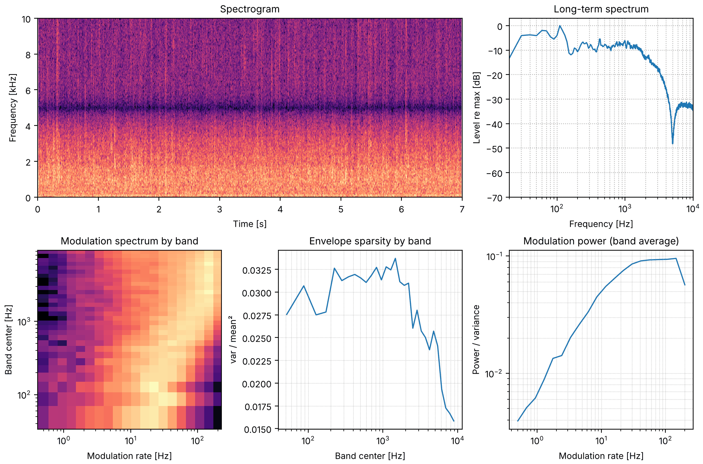
Code
sound = finish(original("rain"))
fig, playhead = texture_fig(sound, original("rain"))Rain, a creek, crickets, applause, fire: sounds made of many similar events, whose character lies in their statistics rather than in any one waveform. After McDermott & Simoncelli (2011), sonore summarizes a texture by time-averaged statistics of a model of the cochlea, and synthesizes a new sample by imposing those statistics on noise.
Press play and a line follows the sound across every time axis in its plots. Click any time axis to play from that point. Start with your volume low.
To run this page yourself, open it as a notebook in Colab or download it. It is the same code, and it fetches the recordings it needs from the sonore repository.
Every example below is the code shown with it, run after this cell: loading a recording and its synthesis, the level the gallery plays sounds at, and the plots.
import os
import urllib.request
import matplotlib.pyplot as plt
import numpy as np
import sonore as so
plt.rcParams.update({"font.size": 9, "axes.titlesize": 10, "figure.dpi": 100})
def fetch(path):
"""A file from the sonore repository, by its path there: the local copy when this runs from
the repository root, otherwise downloaded from GitHub to the same relative path."""
if not os.path.exists(path):
os.makedirs(os.path.dirname(path) or ".", exist_ok=True)
urllib.request.urlretrieve("https://raw.githubusercontent.com/choyun1/sonore/main/" + path, path)
return path
def finish(snd):
"""How every sound in the gallery is played: 5 ms ramps, RMS 0.1, peak at most 0.95."""
snd = snd.ramp(5e-3).normalize(rms=0.1)
return snd.normalize(peak=0.95) if snd.peak > 0.95 else sndimport json
from sonore.texture import TextureStats
FS = 44100
def original(name):
"""A recording; docs/textures/SOURCES.md says where each comes from and which excerpt."""
return so.load(fetch(f"docs/textures/{name}.flac"))
def synthesized(name, imposed=""):
"""A synthesis precomputed by tools/make_texture_synths.py (below)."""
suffix = f"__{imposed}" if imposed else ""
return so.load(fetch(f"docs/textures/synth/{name}{suffix}.flac")).resample(FS)
def report(name):
"""How closely the synthesis matches: the statistic SNR averaged over classes."""
info = json.loads(open(fetch(f"docs/textures/synth/{name}.json")).read())
snr = np.mean(list(info["snr_all_classes"].values()))
return f"Average statistic SNR {snr:.0f} dB after {info['best_iteration']} iterations."
def texture_fig(snd, original, synthetic=False):
"""General-purpose plots (spectrogram, long-term spectrum) plus the texture
model's own statistics drawn with plain matplotlib: modulation power by
band and rate (the model's modulation spectrum), envelope sparsity, and
band-averaged modulation power. Dashed black: the original."""
fig = plt.figure(figsize=(10, 6.6), layout="constrained")
gs = fig.add_gridspec(2, 3)
ax_s = fig.add_subplot(gs[0, :2])
ax_l, ax_m, ax_v, ax_p = (fig.add_subplot(gs[r, c]) for r, c in ((0, 2), (1, 0), (1, 1), (1, 2)))
so.STFT(snd, win_dur=20e-3).plot(ax_s, fmax=10000, db_range=70, colorbar=False)
ax_s.set_title("Spectrogram")
so.long_term_spectrum(snd).plot(ax_l, lw=1.2, label="this sound")
if synthetic:
so.long_term_spectrum(original).plot(ax_l, color="k", ls="--", lw=1, label="original")
ax_l.legend(fontsize=7)
ax_l.set(xlim=(20, 10000), ylim=(-70, 3), title="Long-term spectrum")
target = TextureStats.measure(original)
this = TextureStats.measure(snd, window="uniform" if synthetic else "ramped") # syntheses are circular
cfs = target.model.filterbank.cfs[1:-1]
ok = target.channel_mask()
# The model's modulation spectrum: power at each modulation rate, in each cochlear band.
mcf = target.model.mod_bank.cfs
lev = 10 * np.log10(np.maximum(this.mod_power[1:-1], 1e-6))
ax_m.pcolormesh(mcf, cfs, lev, cmap="magma", vmin=lev.max() - 25, vmax=lev.max(), shading="nearest")
ax_m.set(
xscale="log",
yscale="log",
xlabel="Modulation rate [Hz]",
ylabel="Band center [Hz]",
title="Modulation spectrum by band",
)
ax_v.semilogx(cfs, this.env_var[1:-1], lw=1.2)
ax_p.loglog(target.model.mod_bank.cfs, this.mod_power[ok].mean(0), lw=1.2)
if synthetic:
ax_v.semilogx(cfs, target.env_var[1:-1], "k--", lw=1)
ax_p.loglog(target.model.mod_bank.cfs, target.mod_power[ok].mean(0), "k--", lw=1)
ax_v.set(xlabel="Band center [Hz]", ylabel="var / mean²", title="Envelope sparsity by band")
ax_p.set(
xlabel="Modulation rate [Hz]", ylabel="Power / variance", title="Modulation power (band average)"
)
for ax in (ax_v, ax_p):
ax.grid(ls=":", which="both", lw=0.5)
return fig, [ax_s] # the playhead follows the spectrogramThe sound is split into 30 cochlear bands (cosine filters on the ERB scale, 20 Hz to 10 kHz, plus two edge filters). Each band's envelope is compressed and downsampled to 400 Hz,
with \mathcal{H} the Hilbert transform, and each envelope is in turn split into 20 modulation bands b_{k,n}(t), 0.5 to 200 Hz, constant-Q. All averages \langle\cdot\rangle are over time, weighted by a window that tapers the recording's ends. The statistics are those of the paper:
That makes 1515 numbers per texture. Synthesis starts from Gaussian noise and adjusts each
band's subband signal by conjugate gradient until its statistics match, band by band, over
several passes. The cell below is the call tools/make_texture_synths.py makes. It takes about
2 s per iteration for 5 s of sound, so the gallery's syntheses are computed once and stored.
from sonore.texture import PAPER_CLASSES # noqa: E402
from sonore.texture.synth import synthesize # noqa: E402
def synthesize_like(name, classes=PAPER_CLASSES, seconds=5.0, iterations=30):
"""What tools/make_texture_synths.py does for each recording (not run here)."""
target = TextureStats.measure(original(name))
new, rep = synthesize(target, duration=seconds, classes=classes, rng=1, max_iter=iterations)
return new * (0.05 / new.rms)The plots: spectrogram, long-term spectrum, and three of the model's own statistics: modulation power at each rate in each band (the model's modulation spectrum), envelope sparsity \sigma_k^2/\mu_k^2, and modulation power averaged over bands. For syntheses, the original's is overlaid in dashed black. The model's modulation spectrum is band by band, over rate only; the two-dimensional one of Spectrotemporal ripples, with density across bands as well, is measured for the crickets, applause and rain on Modulation spectrogram.
Steady rain (nick121087, Freesound, CC0).
t00a_rain_original.flac, 7.0 s, mono

sound = finish(original("rain"))
fig, playhead = texture_fig(sound, original("rain"))Gaussian noise adjusted until its statistics match the original's. Average statistic SNR 36 dB after 28 iterations.
t00b_rain_synthesized.flac, 5.0 s, mono
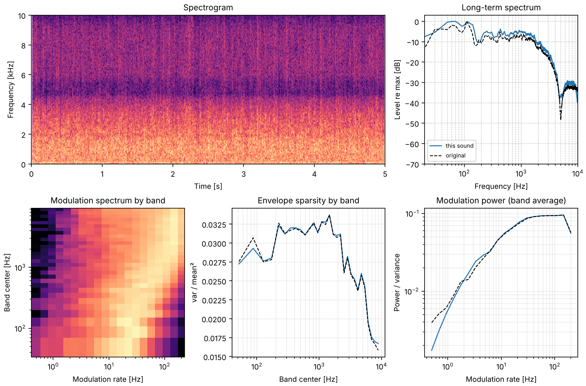
sound = finish(synthesized("rain"))
fig, playhead = texture_fig(sound, original("rain"), synthetic=True)Water burbling over rocks in a small creek (cognito perceptu, Freesound, CC0).
t01a_stream_original.flac, 7.0 s, mono
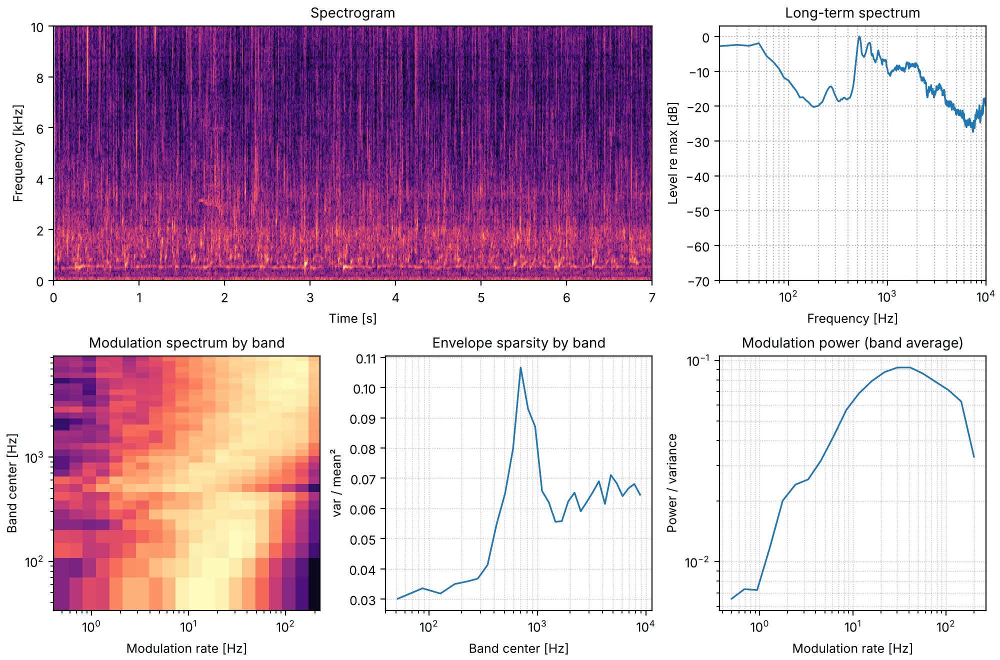
sound = finish(original("stream"))
fig, playhead = texture_fig(sound, original("stream"))Gaussian noise adjusted until its statistics match the original's. Average statistic SNR 37 dB after 30 iterations.
t01b_stream_synthesized.flac, 5.0 s, mono
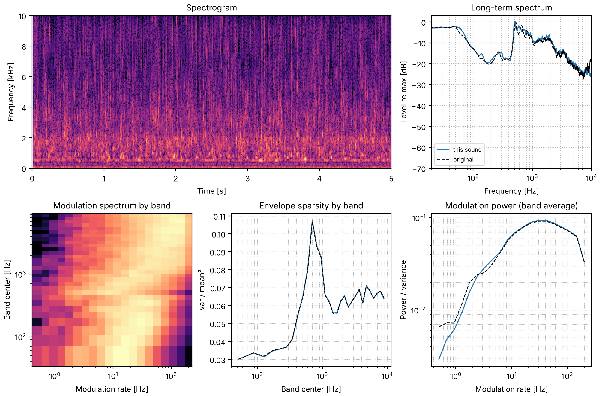
sound = finish(synthesized("stream"))
fig, playhead = texture_fig(sound, original("stream"), synthetic=True)Crickets around midnight (sengjinn, Freesound, CC0).
t02a_crickets_original.flac, 7.0 s, mono
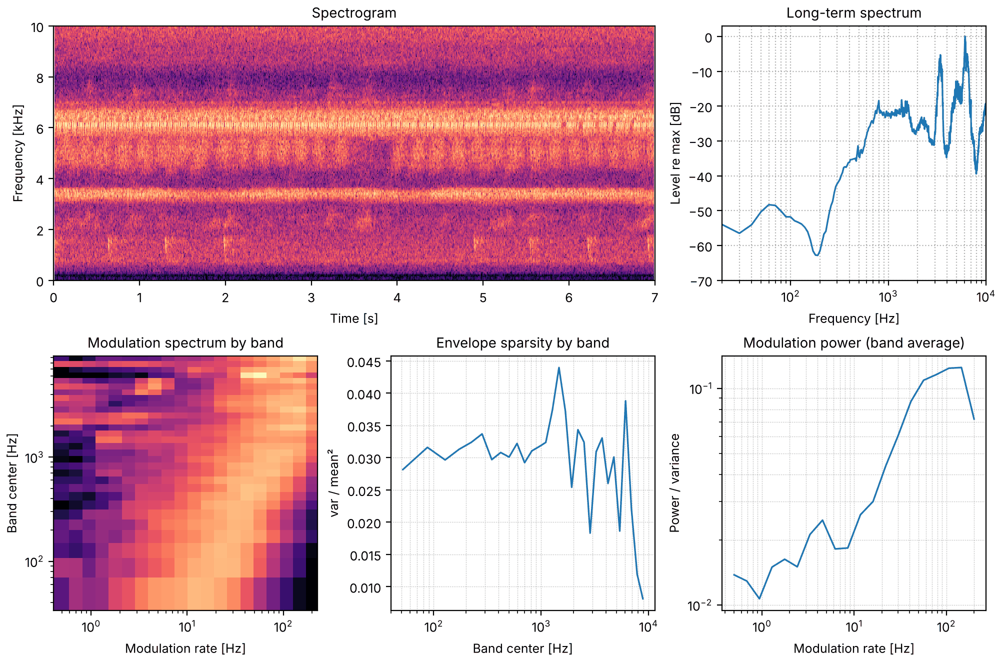
sound = finish(original("crickets"))
fig, playhead = texture_fig(sound, original("crickets"))Gaussian noise adjusted until its statistics match the original's. Average statistic SNR 36 dB after 30 iterations.
t02b_crickets_synthesized.flac, 5.0 s, mono
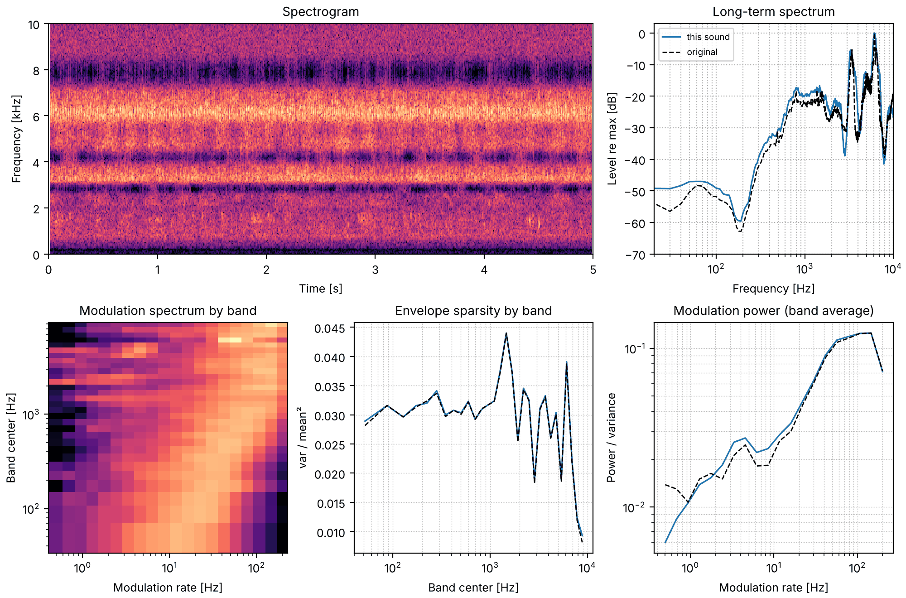
sound = finish(synthesized("crickets"))
fig, playhead = texture_fig(sound, original("crickets"), synthetic=True)About thirty people clapping (Breviceps, Freesound, CC0). Only 3.5 s of original.
t03a_applause_original.flac, 3.5 s, mono
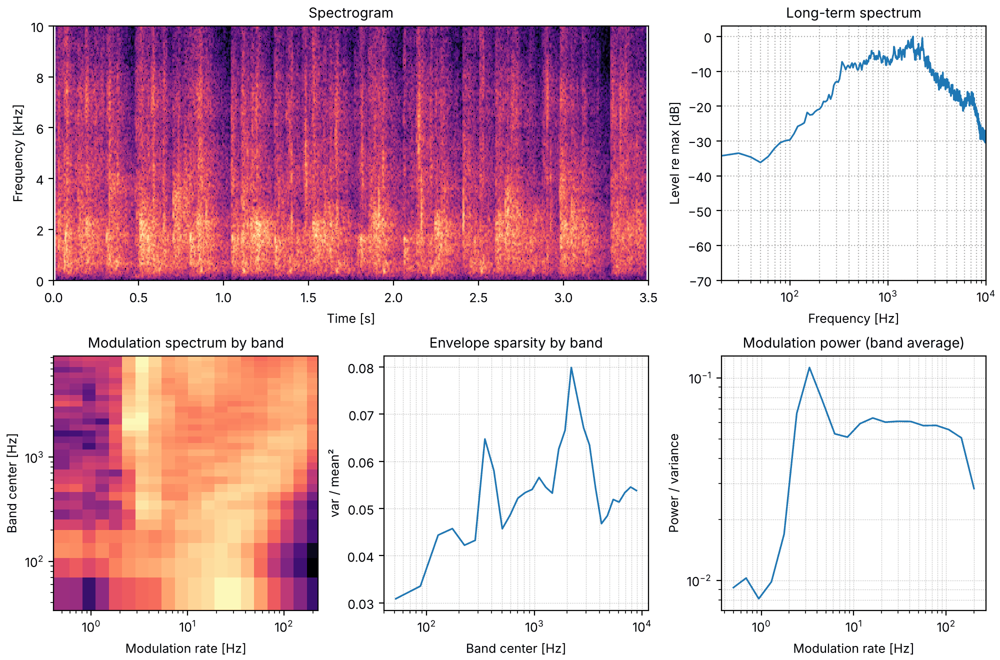
sound = finish(original("applause"))
fig, playhead = texture_fig(sound, original("applause"))Gaussian noise adjusted until its statistics match the original's. Average statistic SNR 43 dB after 30 iterations.
t03b_applause_synthesized.flac, 5.0 s, mono
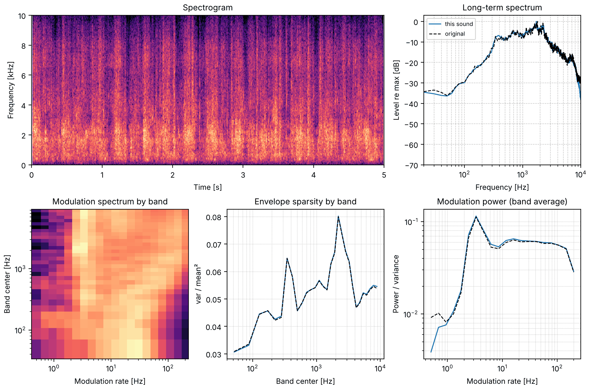
sound = finish(synthesized("applause"))
fig, playhead = texture_fig(sound, original("applause"), synthetic=True)A small backyard fire: sparse pops over a low rumble (Sauron974, Freesound, CC0).
t04a_fire_original.flac, 20.0 s, mono
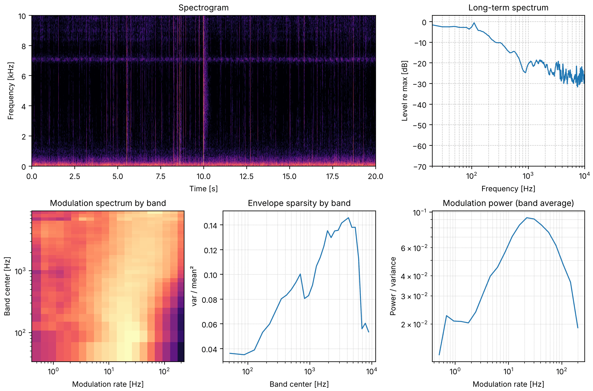
sound = finish(original("fire"))
fig, playhead = texture_fig(sound, original("fire"))Gaussian noise adjusted until its statistics match the original's. Average statistic SNR 21 dB after 29 iterations.
t04b_fire_synthesized.flac, 5.0 s, mono
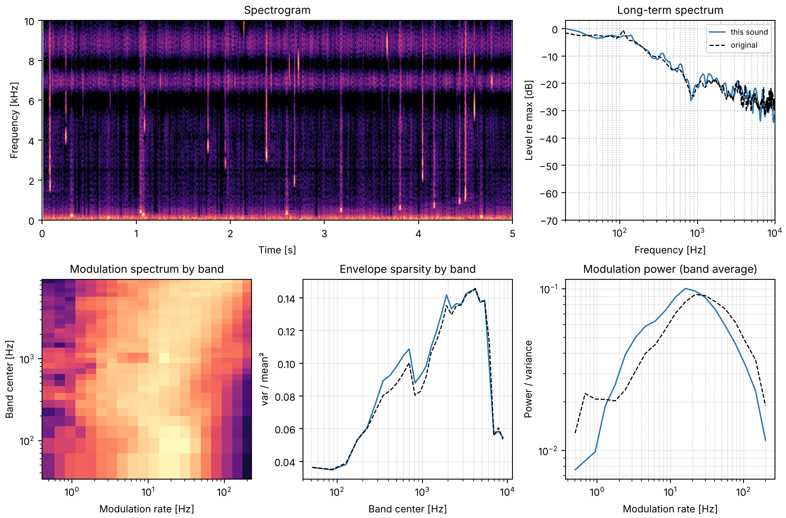
sound = finish(synthesized("fire"))
fig, playhead = texture_fig(sound, original("fire"), synthetic=True)Gas venting through a Yellowstone mud pot (NPS / Jennifer Jerrett, public domain).
t05a_bubbling_mud_original.flac, 20.0 s, mono
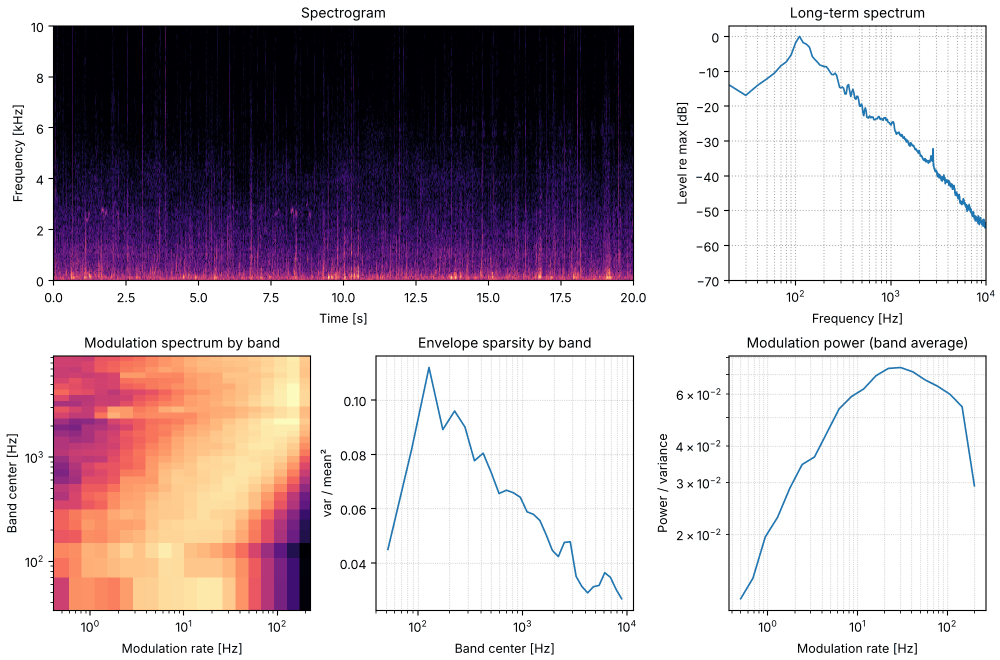
sound = finish(original("mud"))
fig, playhead = texture_fig(sound, original("mud"))Gaussian noise adjusted until its statistics match the original's. Average statistic SNR 38 dB after 29 iterations.
t05b_bubbling_mud_synthesized.flac, 5.0 s, mono
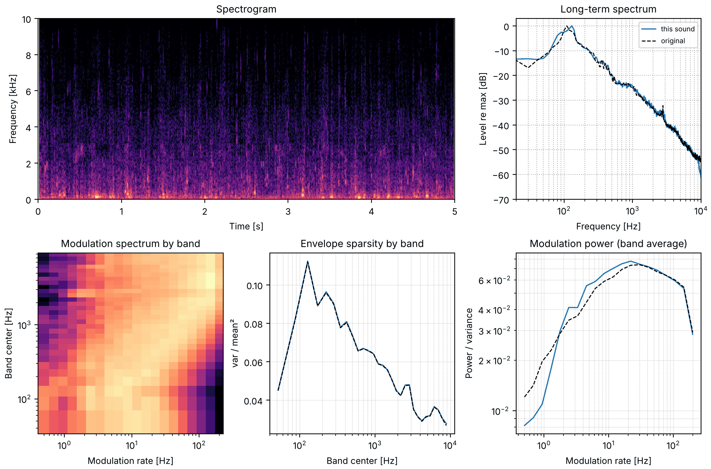
sound = finish(synthesized("mud"))
fig, playhead = texture_fig(sound, original("mud"), synthetic=True)A winter storm, wind with heavy rain (sonicwars, Freesound, CC0).
t06a_wind_and_rain_original.flac, 7.0 s, mono
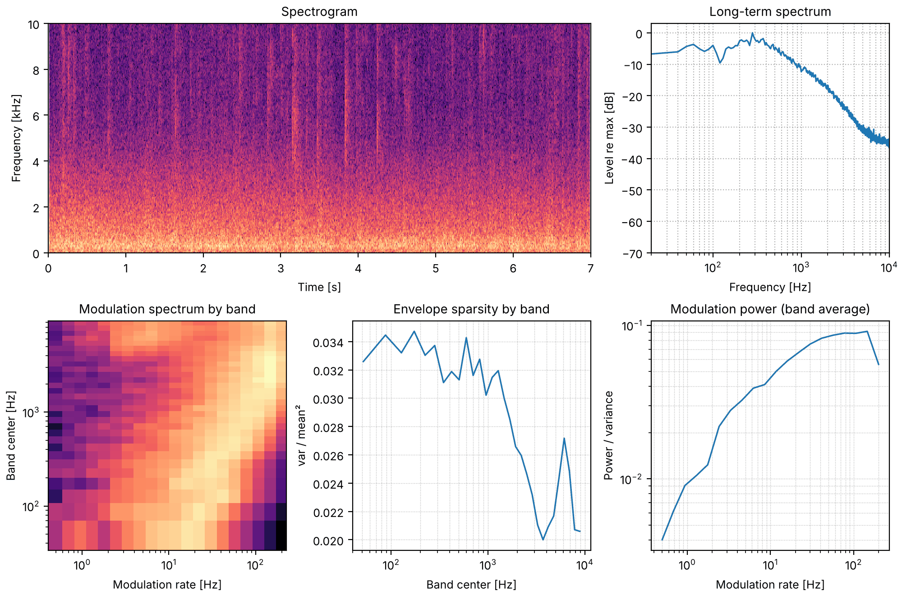
sound = finish(original("wind_rain"))
fig, playhead = texture_fig(sound, original("wind_rain"))Gaussian noise adjusted until its statistics match the original's. Average statistic SNR 39 dB after 30 iterations.
t06b_wind_and_rain_synthesized.flac, 5.0 s, mono
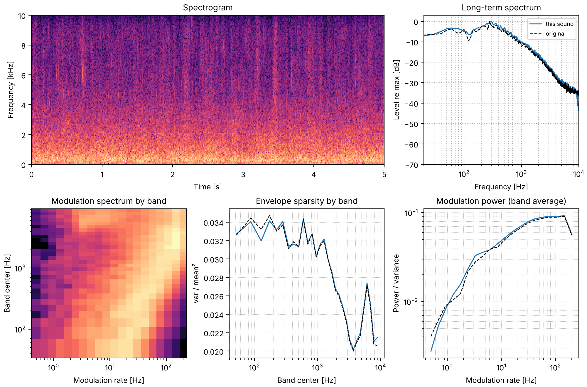
sound = finish(synthesized("wind_rain"))
fig, playhead = texture_fig(sound, original("wind_rain"), synthetic=True)The same textures synthesized with only some of the statistics imposed, by passing fewer
classes to synthesize_like:
("env_mean", "env_var", "env_skew", "env_kurt"), the envelope marginals only;"mod_power", but no correlations across bands or modulation bands.Compare with the full syntheses above: the marginals alone give the right sparsity but not the right rhythm or the coordination across bands. Hearing a modulation spectrum makes the converse point with the fire: each band's modulation spectrum kept, with random phases, and the crackles are gone.
Only the envelope marginals imposed (mean, variance, skew, kurtosis of each band's envelope).
u00_applause_marginals_only.flac, 5.0 s, mono
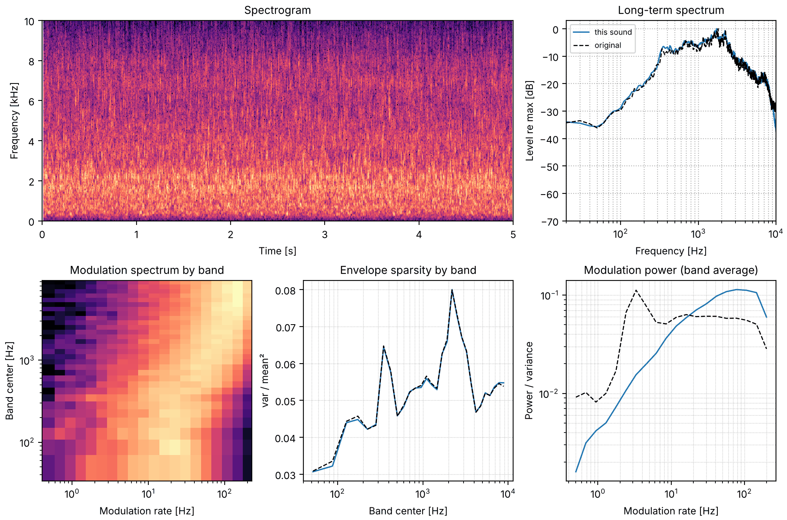
sound = finish(synthesized("applause", "marginals"))
fig, playhead = texture_fig(sound, original("applause"), synthetic=True)Envelope marginals plus modulation power; no correlations across bands or modulation bands.
u01_applause_marginals_and_modulation_power.flac, 5.0 s, mono
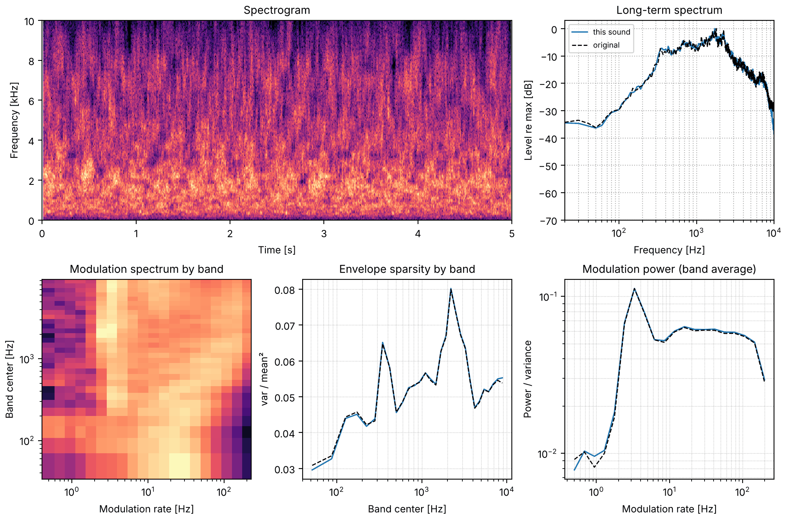
sound = finish(synthesized("applause", "marginals_modpower"))
fig, playhead = texture_fig(sound, original("applause"), synthetic=True)Only the envelope marginals imposed (mean, variance, skew, kurtosis of each band's envelope).
u10_stream_marginals_only.flac, 5.0 s, mono
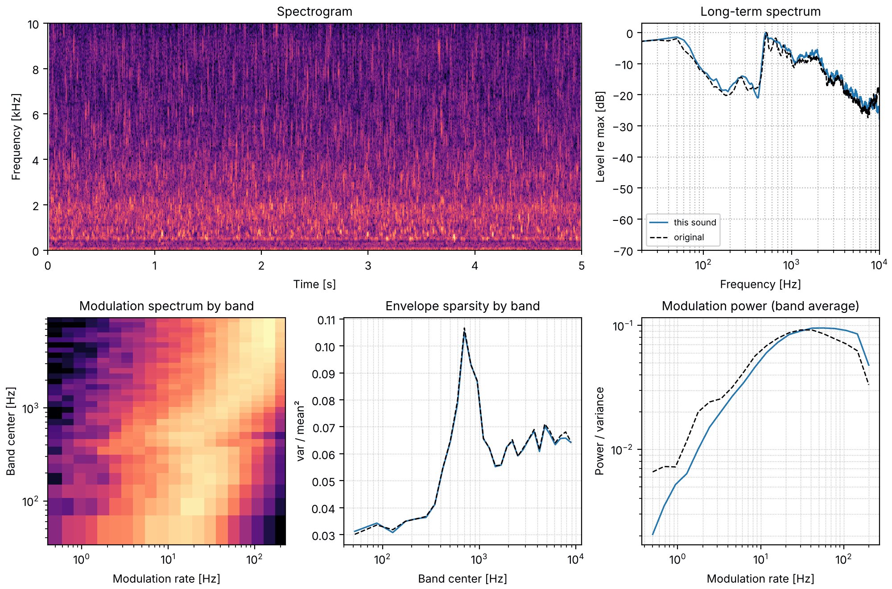
sound = finish(synthesized("stream", "marginals"))
fig, playhead = texture_fig(sound, original("stream"), synthetic=True)Envelope marginals plus modulation power; no correlations across bands or modulation bands.
u11_stream_marginals_and_modulation_power.flac, 5.0 s, mono
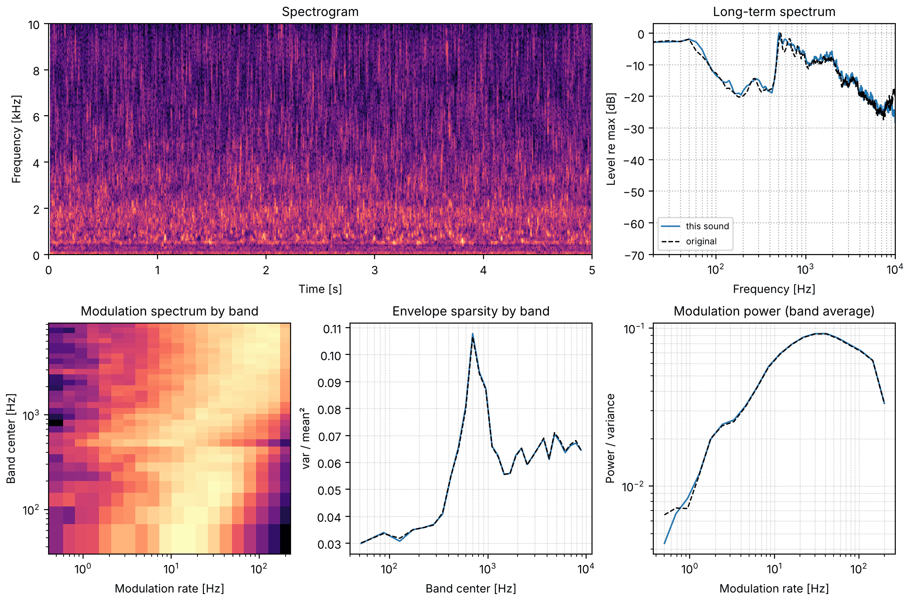
sound = finish(synthesized("stream", "marginals_modpower"))
fig, playhead = texture_fig(sound, original("stream"), synthetic=True)Only the envelope marginals imposed (mean, variance, skew, kurtosis of each band's envelope).
u20_fire_marginals_only.flac, 5.0 s, mono
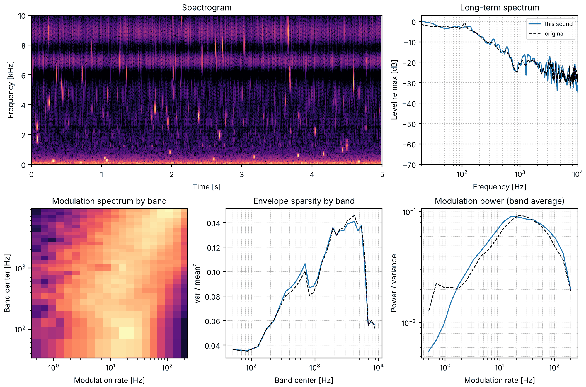
sound = finish(synthesized("fire", "marginals"))
fig, playhead = texture_fig(sound, original("fire"), synthetic=True)Envelope marginals plus modulation power; no correlations across bands or modulation bands.
u21_fire_marginals_and_modulation_power.flac, 5.0 s, mono
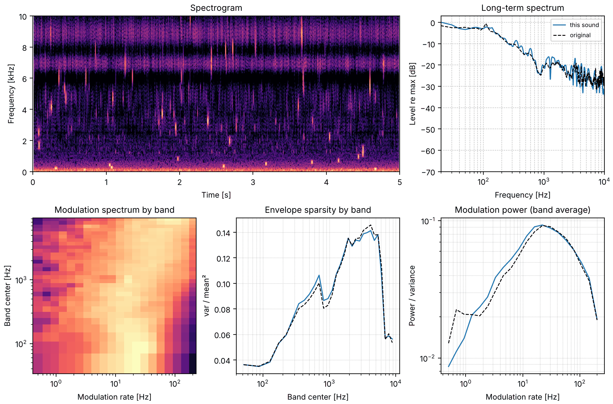
sound = finish(synthesized("fire", "marginals_modpower"))
fig, playhead = texture_fig(sound, original("fire"), synthetic=True)The definition above, many similar events, can be built directly. so.event_train copies one
event at onsets whose intervals are drawn from a distribution, here exponential, which makes
the onsets a Poisson process. Its long-term spectrum is the event's own at every rate; what the
rate changes is how many events overlap, and with it the statistics beyond the spectrum (the
design notes measure both: event-texture.md).
from scipy import stats
chirp = so.exponential_chirp(0.03, FS, 2000, 6000)
chirp = chirp * np.hanning(len(chirp))[:, None]
def chorus(rate, duration=5.0, seed=0, **kwargs):
"""Copies of the chirp at Poisson onsets, `rate` per second on average."""
return so.event_train(chirp, duration, stats.expon(scale=1 / rate), lead=0.03, rng=seed, **kwargs)
def events_fig(snd):
"""The same plots as the recordings above, measured on this sound alone. The panels by band
show only the bands from 2 to 6 kHz, where the chirp has its energy: elsewhere the
statistics are those of numerical noise."""
fig, playhead = texture_fig(snd, snd)
_, _, ax_m, ax_v, _ = fig.axes
band_centers, sparsity_by_band = ax_v.lines[0].get_data()
in_band = (band_centers >= 2000) & (band_centers <= 6000)
ax_v.set(xlim=(1900, 6000), ylim=(0, 1.1 * sparsity_by_band[in_band].max()))
ax_m.set_ylim(1900, 6000)
return fig, playheadThe event: a 30 ms sweep from 2 to 6 kHz, exponential in frequency, under a Hann window, repeated once a second here so it can be heard on its own.
e00_the_event.flac, 3.0 s, mono
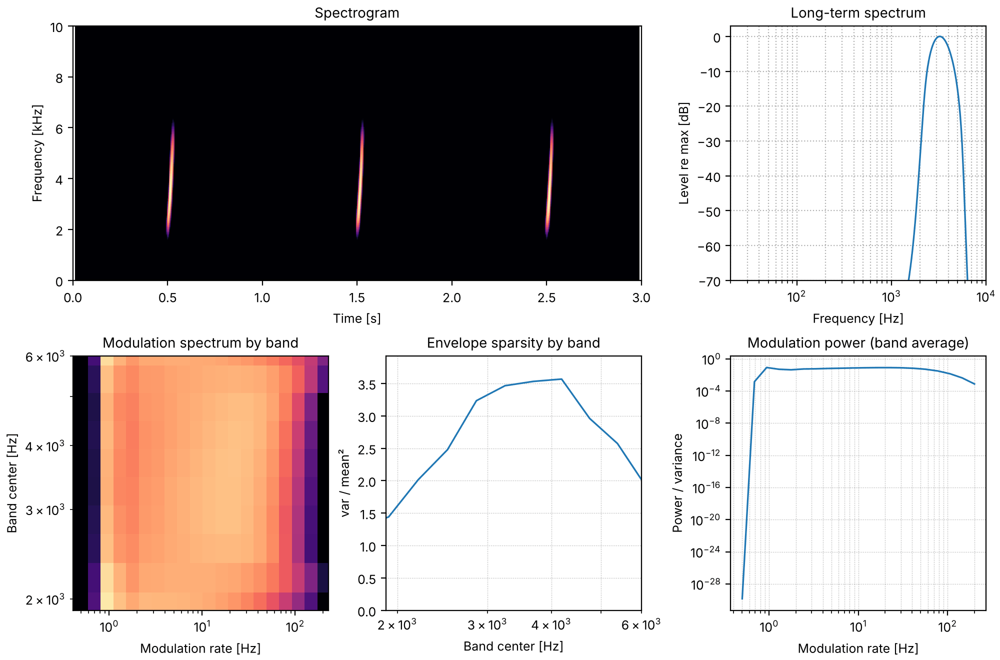
sound = finish(so.event_train(chirp, 3.0, 1.0, lead=0.5))
fig, playhead = events_fig(sound)Three per second on average. With Poisson timing the gaps are irregular, and an event of 30 ms overlaps another about 16% of the time.
e02_3_events_per_second.flac, 5.0 s, mono
sound = finish(chorus(3))
fig, playhead = events_fig(sound)Thirty per second: about one event sounding at any moment, and most events overlap another.
e04_30_events_per_second.flac, 5.0 s, mono
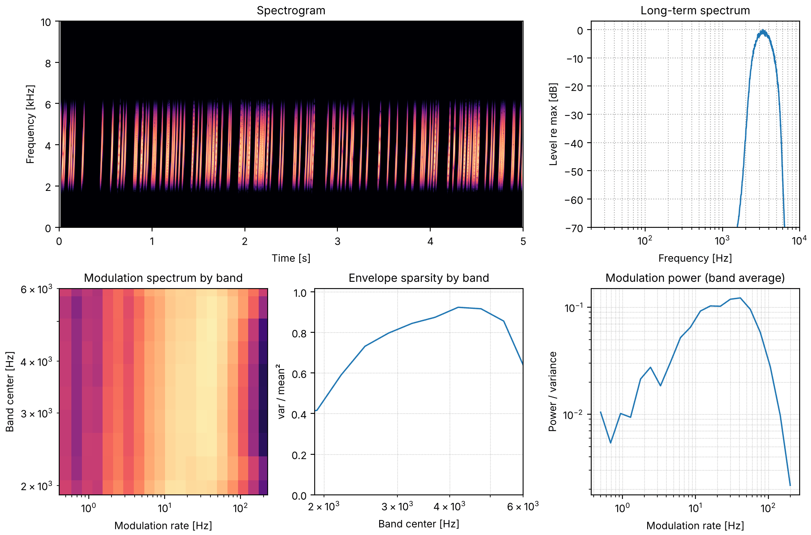
sound = finish(chorus(30))
fig, playhead = events_fig(sound)Three hundred per second: nine events sounding at once on average. The sum starts resembling Gaussian noise with the chirp's spectrum.
e06_300_events_per_second.flac, 5.0 s, mono
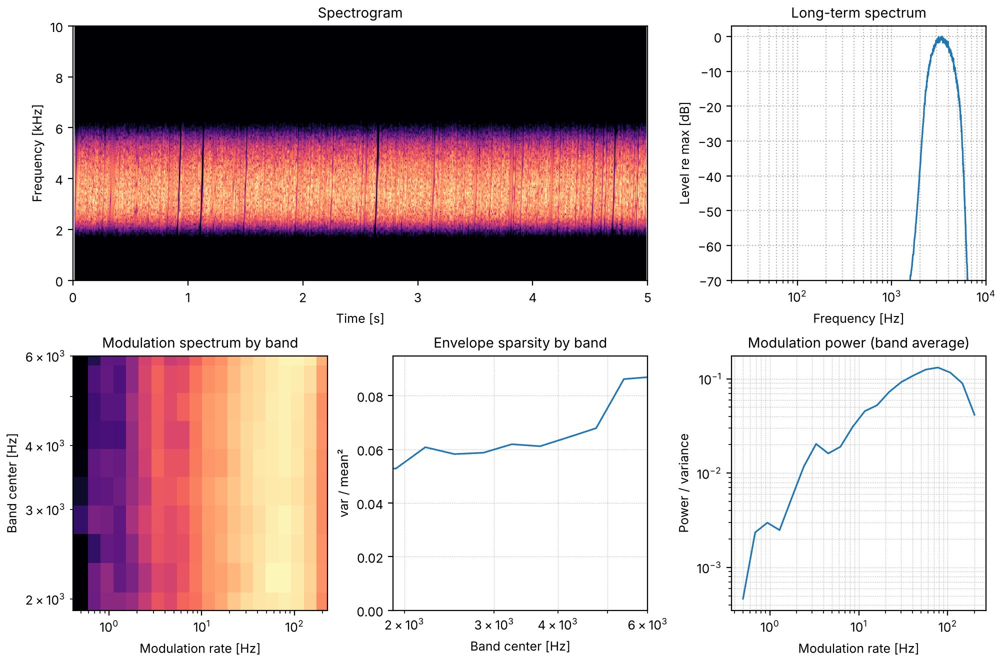
sound = finish(chorus(300))
fig, playhead = events_fig(sound)Where each rate sits on one of the texture model's statistics: the envelope variance over the
squared mean (env_var, as in the plots above), averaged over the bands from 2 to 6 kHz where
the chirp has its energy, measured on 10 s of each rate. The dashed line is Gaussian noise
filtered to the chirp's spectrum, the limit as the rate grows. This is a one-way view: it
places each sound on one statistic and says nothing about its rhythm or onsets.
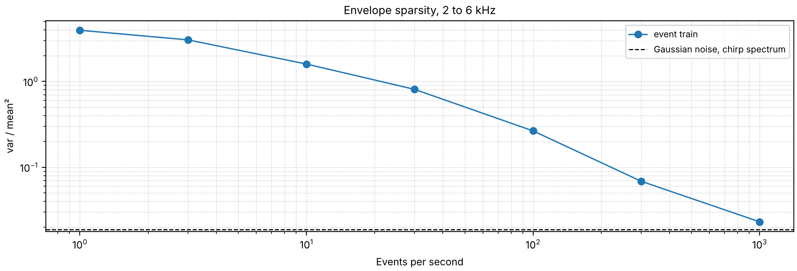
rates = [1, 3, 10, 30, 100, 300, 1000]
def sparsity(snd):
measured = TextureStats.measure(snd)
cfs = measured.model.filterbank.cfs
return measured.env_var[(cfs >= 2000) & (cfs <= 6000)].mean()
noise = so.gaussian_noise(10.0, FS, rng=0).convolve(chirp)[:10.0]
fig, ax = plt.subplots(figsize=(10, 3.4), layout="constrained")
ax.loglog(rates, [sparsity(chorus(rate, duration=10.0)) for rate in rates], "o-", lw=1.2, label="event train")
ax.axhline(sparsity(noise), color="k", ls="--", lw=1, label="Gaussian noise, chirp spectrum")
ax.set(xlabel="Events per second", ylabel="var / mean²", title="Envelope sparsity, 2 to 6 kHz")
ax.legend(fontsize=8)
ax.grid(ls=":", which="both", lw=0.5)Each copy's level and pitch can be drawn from a distribution too, and so can the timing. All examples below are at 30 events per second, the rate where events start to run into each other. A spread in level leaves a few loud events standing out of the rest, which keeps the sound sparse by the measure above for longer as the rate rises; a spread in pitch widens the spectrum. Nearly regular timing puts a steady rhythm at the rate into the envelope.
Levels drawn from a normal distribution in dB, standard deviation 9 dB.
e10_level_spread_9_db.flac, 5.0 s, mono
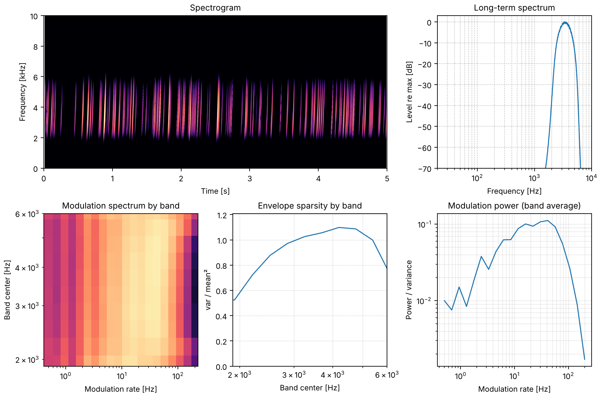
sound = finish(chorus(30, level_db=stats.norm(0, 9)))
fig, playhead = events_fig(sound)Pitch shifts drawn from a normal distribution in cents, standard deviation 150 cents. Each copy is resampled, so a higher copy is also a shorter one.
e11_pitch_spread_150_cents.flac, 5.0 s, mono
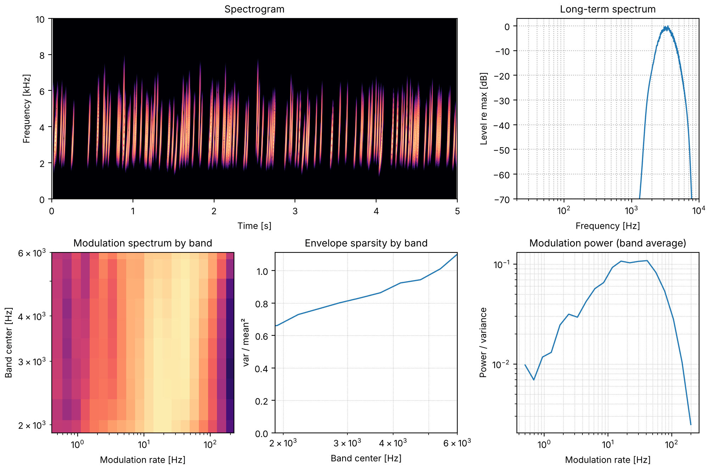
sound = finish(chorus(30, pitch_cents=stats.norm(0, 150)))
fig, playhead = events_fig(sound)Both spreads at once: levels with a standard deviation of 9 dB and pitch shifts with a standard deviation of 150 cents, drawn independently for each copy.
e13_level_and_pitch_spread_together.flac, 5.0 s, mono
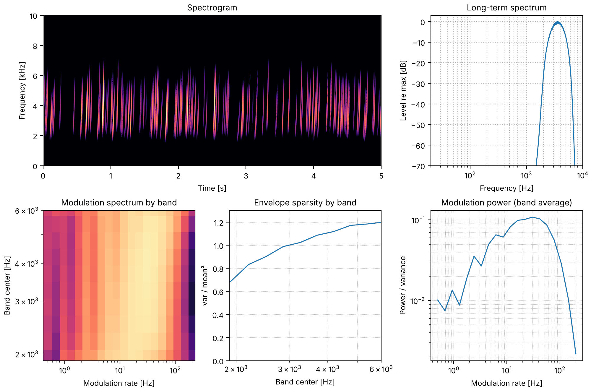
sound = finish(chorus(30, level_db=stats.norm(0, 9), pitch_cents=stats.norm(0, 150)))
fig, playhead = events_fig(sound)Intervals from a gamma distribution with shape 16: the same mean rate, but intervals vary by only a quarter of their mean, so the events come almost evenly.
e12_nearly_regular_timing.flac, 5.0 s, mono
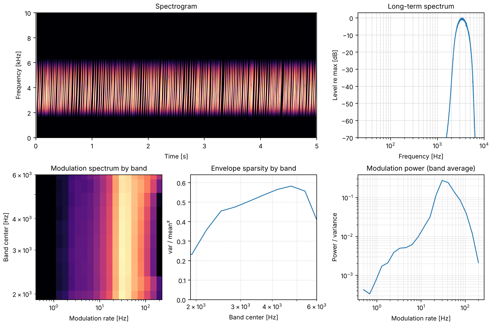
sound = finish(so.event_train(chirp, 5.0, stats.gamma(16, scale=1 / (30 * 16)), lead=0.03, rng=0))
fig, playhead = events_fig(sound)A rate that changes over time: rate_scale steps from 10 to 100 and 1000 events per second,
3 s at each. A track is interpolated linearly between its points, so each step is written as
two points a microsecond apart.
e14_steps_of_10_100_and_1000_events_per_second.flac, 9.0 s, mono
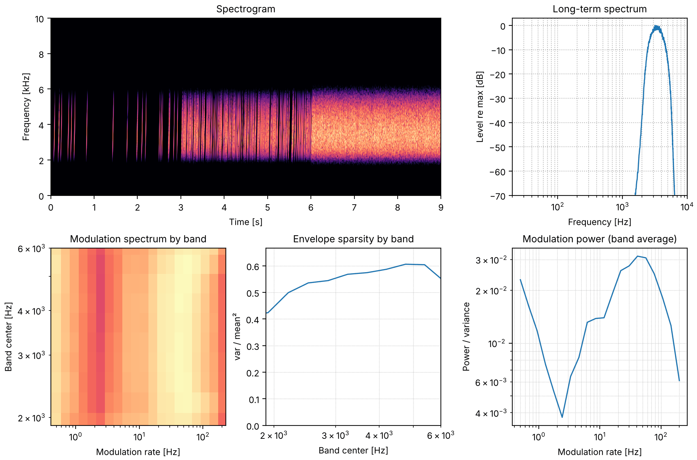
step_rates = [10, 100, 1000]
step_times = [t for k in range(len(step_rates)) for t in (3 * k, 3 * (k + 1) - 1e-6)]
steps = (step_times, np.repeat(step_rates, 2))
sound = finish(so.event_train(chirp, 9.0, stats.expon(scale=1.0), rate_scale=steps, rng=0))
fig, playhead = events_fig(sound)A fire's pops come in every size. Write A for the size of a pop, say the largest envelope value in a short bin. A power-law (Pareto) tail means
so a pop ten times bigger is 10^{\alpha} times rarer. The moments of such a tail are
and infinite for n \ge \alpha: the variance needs \alpha > 2 and the kurtosis \alpha > 4. Below that, a moment measured on a recording keeps growing with the recording's length, because a longer recording catches rarer, bigger pops: over 1 s pieces of the fire recording the envelope kurtosis is about 220, over all 20 s about 1900. The texture model describes each band by such moments, so for a sound like this it matches numbers that belong to the excerpt more than to the sound. The exponent does not drift. From the k largest values, x_{(1)} \ge x_{(2)} \ge \dots \ge x_{(k+1)}, the Hill estimator is
with a standard error of about \hat\alpha / \sqrt{k}. so.envelope_peaks applies it to the
largest envelope value in each 5 ms bin of the sound high-passed at 300 Hz and at 2 kHz,
fitting the largest 5%. Below about 2 a sound is made of pops; on this page the stream gives
about 3, the rain about 5 and the crickets about 10. The design notes give the measurement, how
far to trust it, and a survey of the 168 recordings of McDermott & Simoncelli (2011):
envelope-peaks.md.
The fraction of 5 ms bins whose largest envelope value exceeds each value, on log-log axes, for the fire recording (20 s) and its synthesis (5 s). A power law is a straight line here, with slope -\alpha; the dashed lines are the fits. The original is close to a straight line over almost two decades. The synthesis gets about the same exponent from its largest 5%, but its curve is not straight: a shelf of medium-sized peaks, then a steep drop. Its loud moments come in a narrower range of sizes, which the single number misses and the curve shows.
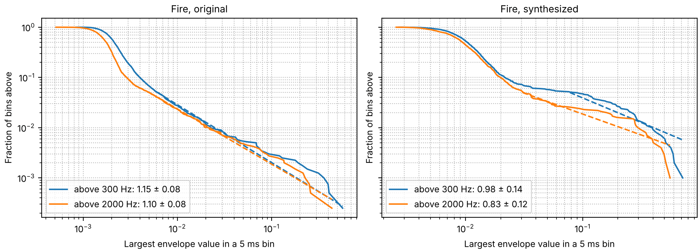
fig, (ax_original, ax_synthesis) = plt.subplots(1, 2, figsize=(10, 3.6), layout="constrained", sharey=True)
so.envelope_peaks(original("fire")).plot(ax_original)
so.envelope_peaks(synthesized("fire")).plot(ax_synthesis)
ax_original.set_title("Fire, original")
ax_synthesis.set_title("Fire, synthesized")To hear what the exponent means, so.event_train can make pops whose sizes follow a power law
with a chosen exponent. A pop's level in dB above the smallest, L = 20 \log_{10}(A / x_0), has
P(L > l) = e^{-l \alpha \ln 10 / 20}: power-law sizes are exponentially distributed levels, with
scale 20 / (\alpha \ln 10) dB. Below, a 3 ms burst of noise,
30 times a second on average, with levels capped at 40 dB above the smallest. The exponent
measured on each comes out close to the one asked for.
burst = so.gaussian_noise(0.003, FS, rng=0)
burst = burst * np.hanning(len(burst))[:, None]
def pops(exponent, rate=30, duration=7.0, seed=0):
"""Bursts at Poisson onsets, with levels whose amplitudes follow a power law."""
scale = 20 / (exponent * np.log(10)) # dB
levels = stats.truncexpon(b=40 / scale, scale=scale) # 0 to 40 dB
return so.event_train(burst, duration, stats.expon(scale=1 / rate), level_db=levels, lead=0.01, rng=seed)
def pops_fig(snd):
"""The waveform, and the envelope peaks as above."""
fig, (ax_wave, ax_peaks) = plt.subplots(
1, 2, figsize=(10, 3.4), layout="constrained", gridspec_kw={"width_ratios": [3, 2]}
)
snd.plot(ax_wave)
so.envelope_peaks(snd).plot(ax_peaks)
return fig, [ax_wave]Exponent 1: most pops are small, and every few seconds one is far louder than the rest.
tp1_pops_exponent_1.flac, 7.0 s, mono
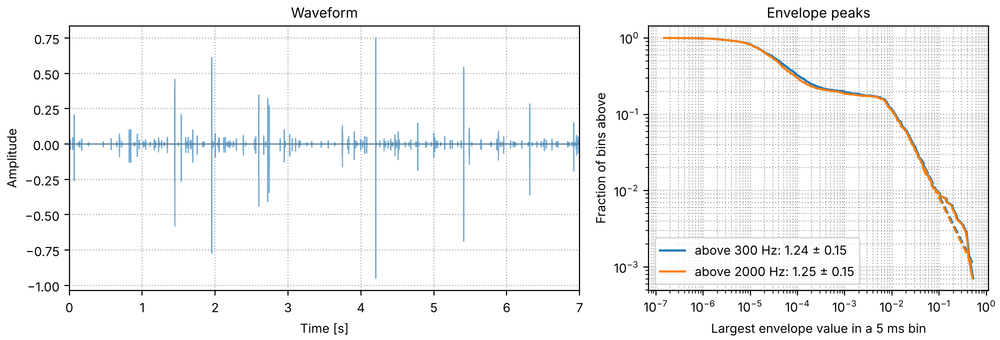
sound = finish(pops(1.0))
fig, playhead = pops_fig(sound)Exponent 2: the loudest pops stand out less.
tp2_pops_exponent_2.flac, 7.0 s, mono
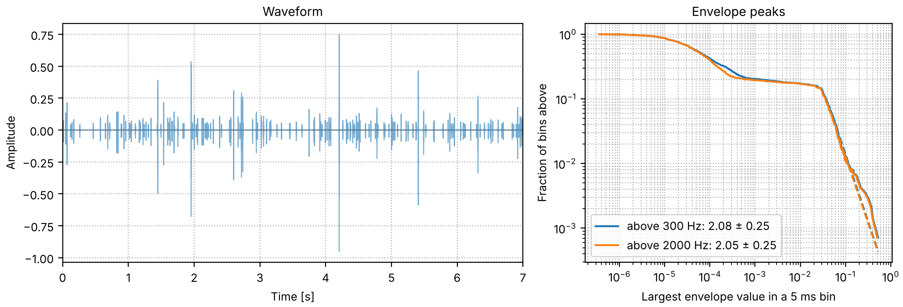
sound = finish(pops(2.0))
fig, playhead = pops_fig(sound)Exponent 4: the pops are all of a similar size.
tp3_pops_exponent_4.flac, 7.0 s, mono
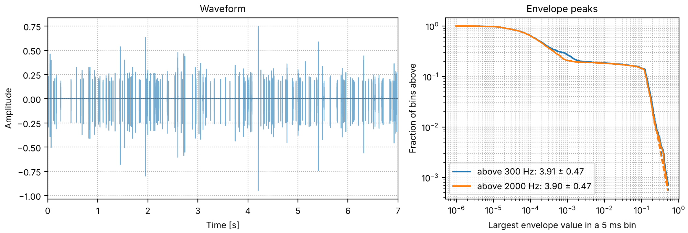
sound = finish(pops(4.0))
fig, playhead = pops_fig(sound)The fire's synthesis keeps pops, but too many of them are medium-sized, and the background
sits too close to the biggest: the median bin is 35 dB below the biggest pops in the
synthesis, 43 dB in the original. A synthesis as long as the original does no better. What
sounded closer to the original by ear was to take the pops out, synthesize the rest, and put
pops back with so.event_train:
This recipe is sonore's own, put together for this page from standard parts (texture synthesis, and shot noise with power-law sizes); we know of no paper that describes it, and it is not a validated method. Its only test is one listener comparing it by ear with the plain synthesis on a handful of the paper's recordings. There it sounded closer on two other fires and a clapper close to the microphone, pops that are random in time over a steady background, and no better on rhythmic or impact sounds (tapping, a bongo loop, a typewriter, castanets), which the texture model also synthesizes poorly on its own; McDermott & Simoncelli (2011) list rhythm among the model's failures.
def remove_pops(sound):
"""The sound with its pops limited away: each 5 ms bin is scaled so that its largest envelope
value above 300 Hz is at most twice the 80th percentile of those values. The gain is
smoothed over 2 ms so the cuts do not click. tools/make_texture_synths.py synthesizes the
fire's background with this same function."""
peaks = so.envelope_peaks(sound, cutoffs_hz=(300.0,))
maxima = peaks.maxima[:, 0]
threshold = 2 * np.percentile(maxima, 80)
bin_length = int(round(peaks.bin_seconds * sound.fs))
gain = np.ones(len(sound))
gain[: len(maxima) * bin_length] = np.repeat(np.minimum(1.0, threshold / maxima), bin_length)
smoothing = np.hanning(int(0.002 * sound.fs))
gain = np.minimum(gain, np.convolve(gain, smoothing / smoothing.sum(), "same"))
return sound * gain[:, None]
def biggest_pops(sound, count=8, length=0.015):
"""The `count` biggest pops, each `length` long from 2 ms before its peak, at least 0.1 s apart,
with softened edges and unit peak."""
peaks = so.envelope_peaks(sound, cutoffs_hz=(300.0,))
maxima = peaks.maxima[:, 0]
chosen = []
for bin_index in np.argsort(maxima)[::-1]:
if all(abs(bin_index - other) * peaks.bin_seconds > 0.1 for other in chosen):
chosen.append(bin_index)
if len(chosen) == count:
break
samples, fs = sound.data[:, 0], sound.fs
bin_length = int(round(peaks.bin_seconds * fs))
n_event = int(length * fs)
events = []
for bin_index in chosen:
in_bin = samples[bin_index * bin_length : (bin_index + 1) * bin_length]
start = max(bin_index * bin_length + int(np.argmax(np.abs(in_bin))) - int(0.002 * fs), 0)
piece = samples[start : start + n_event] * np.hanning(n_event) ** 0.25
events.append(so.Sound(piece / np.abs(piece).max(), fs))
return events
def background_plus_pops(sound, background, background_db=-3.0, seed=0):
"""`background` (a synthesis of `remove_pops(sound)`) with pops from `sound` added: the rate, the
exponent and the range of sizes are measured on `sound`, the smallest pop sits at the
threshold `remove_pops` limits to, and the background is `background_db` down."""
peaks = so.envelope_peaks(sound, cutoffs_hz=(300.0,))
maxima = peaks.maxima[:, 0]
threshold = 2 * np.percentile(maxima, 80)
rate = np.sum((maxima[1:] > threshold) & (maxima[:-1] <= threshold)) / sound.duration
range_db = 20 * np.log10(maxima.max() / threshold)
scale = 20 / (peaks.exponent[0] * np.log(10)) # dB
levels = stats.truncexpon(b=range_db / scale, scale=scale)
events = biggest_pops(sound)
out = background * 10 ** (background_db / 20)
for k, event in enumerate(events):
size = so.envelope_peaks(event.pad(0.05, 0.05), cutoffs_hz=(300.0,)).maxima.max()
train = so.event_train(event * (threshold / size), background.duration,
stats.expon(scale=len(events) / rate), level_db=levels, rng=seed + k)
out = out + train[: background.duration]
return out
fire = original("fire")
fire_background = synthesized("fire", "background")
fire_background = fire_background * (remove_pops(fire).rms / fire_background.rms)The fire with its pops limited away: the hiss and rumble under the pops.
tp4_fire_with_its_pops_removed.flac, 20.0 s, mono
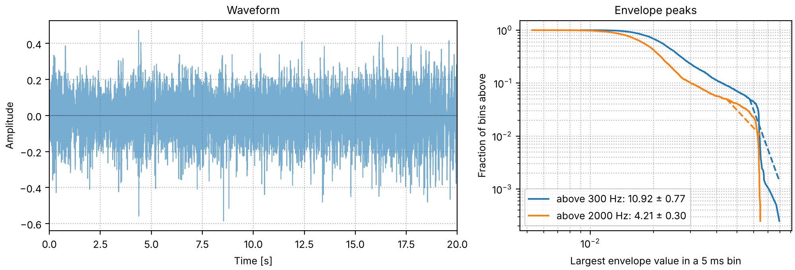
sound = finish(remove_pops(fire))
fig, playhead = pops_fig(sound)The fire's background synthesized from its statistics alone, 10 s. Average statistic SNR 39 dB after 28 iterations.
tp5_background_synthesized.flac, 10.0 s, mono
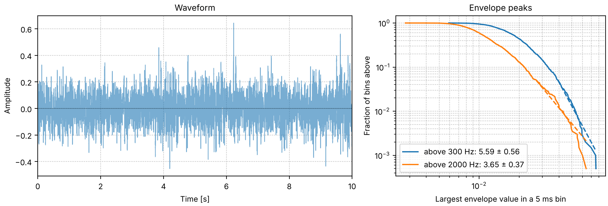
sound = finish(fire_background)
fig, playhead = pops_fig(sound)The synthesized background, 3 dB down, with the recording's own pops added back at power-law sizes. Compare with the original and the synthesis at the top of the page.
tp6_background_plus_pops.flac, 10.0 s, mono
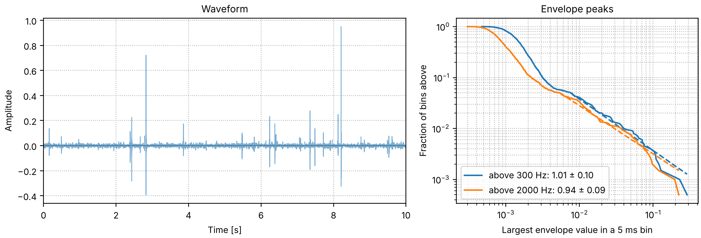
sound = finish(background_plus_pops(fire, fire_background))
fig, playhead = pops_fig(sound)envelope_peakstexture filterbank.Cosine modulation